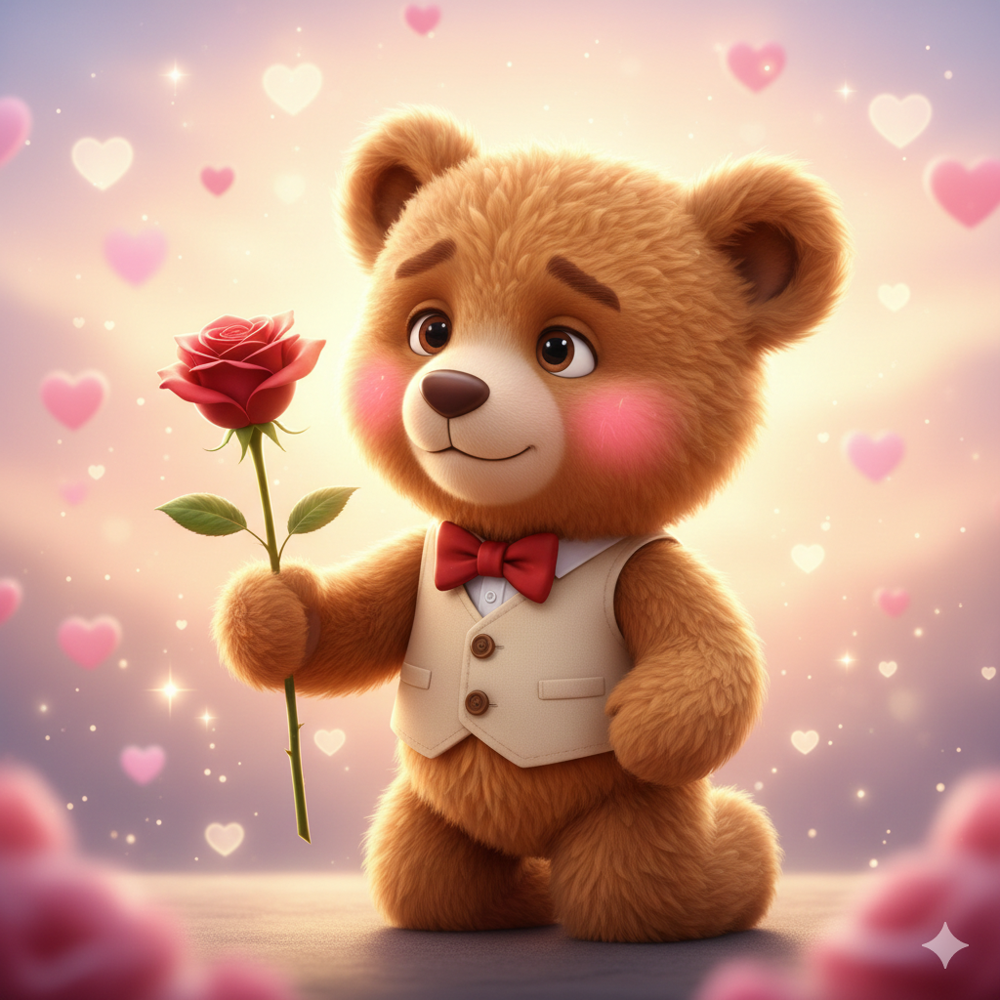
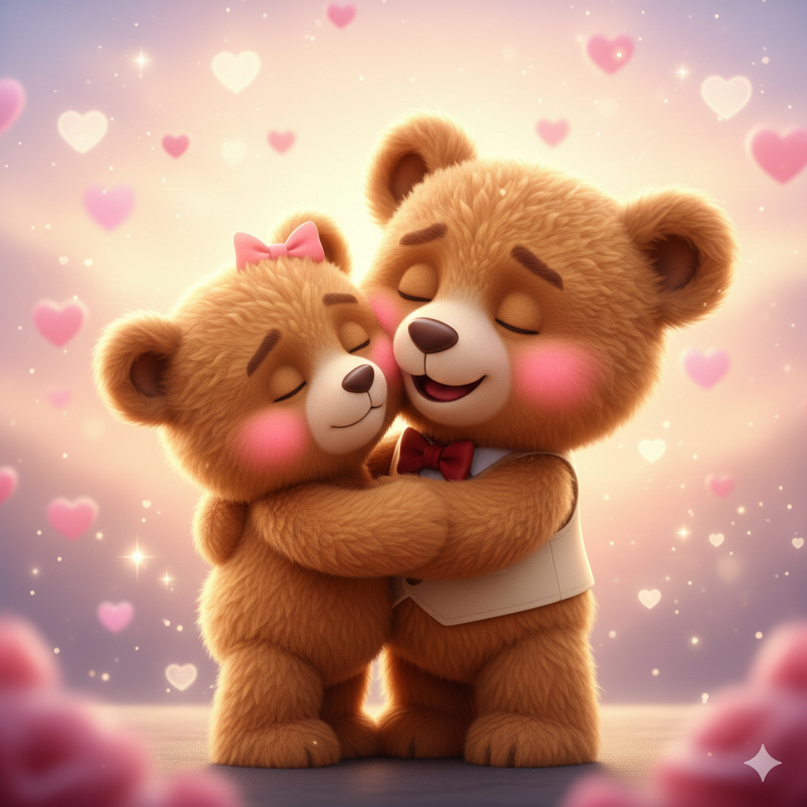

Veux-tu être mon Valentin Moctar ?
OUI !
Non
© 2026 From Acsel - Developed by Moctar

Youpi ! ❤️
Mon cœur déborde de joie. Chaque jour à tes côtés est aventure,
une douceur, un poème. Merci de faire de ma vie une symphonie
d'amour. Je t'aime que les mots ne peuvent le dire.
© 2026 From Acsel - Developed by Moctar